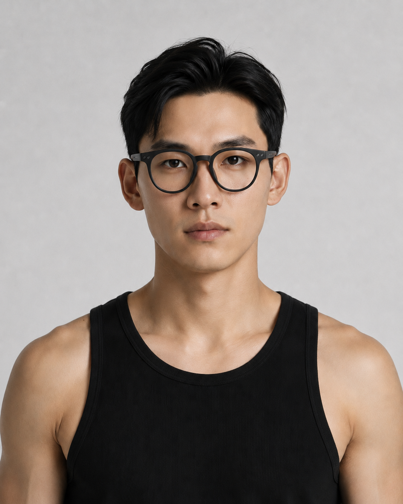
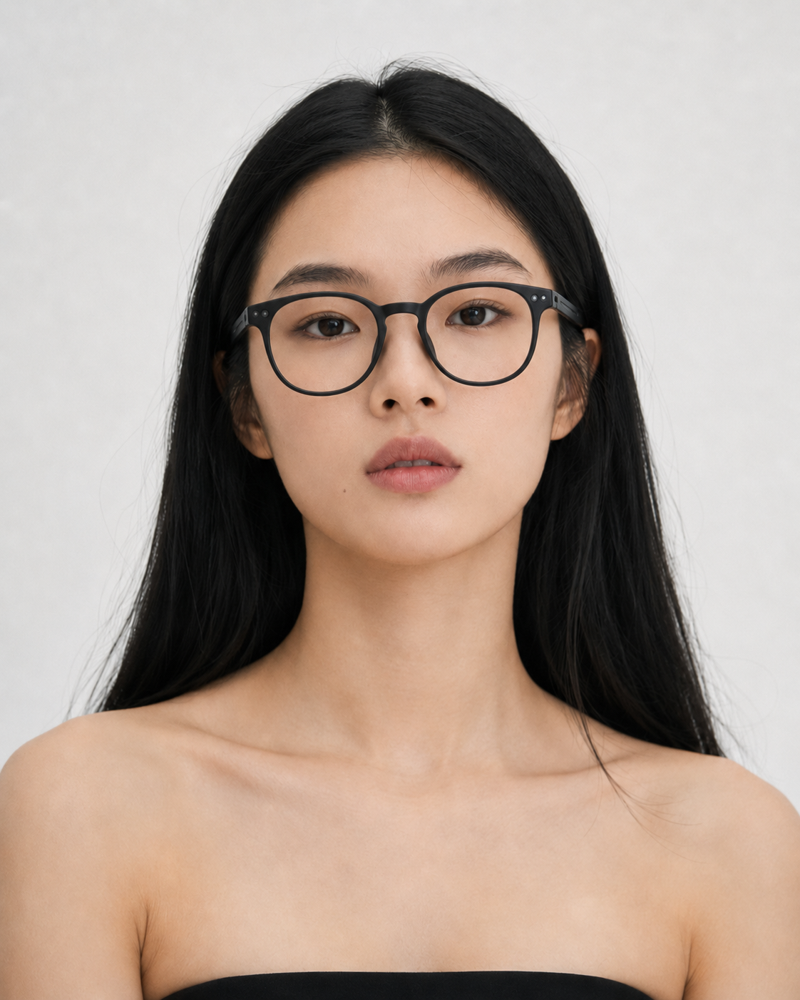
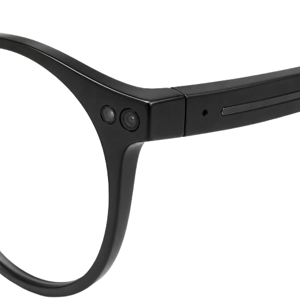
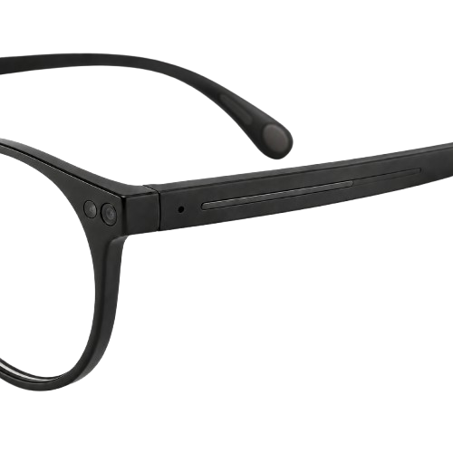
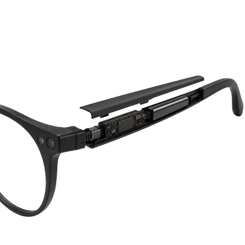
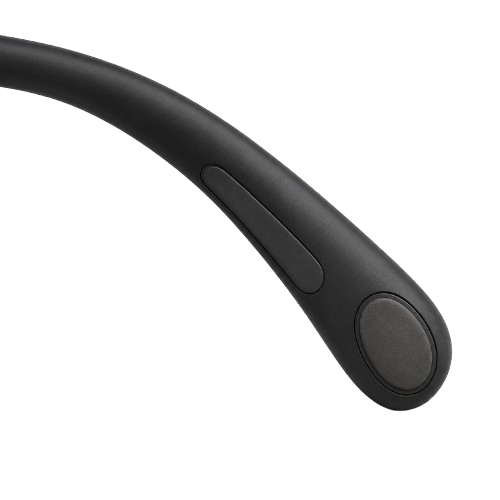
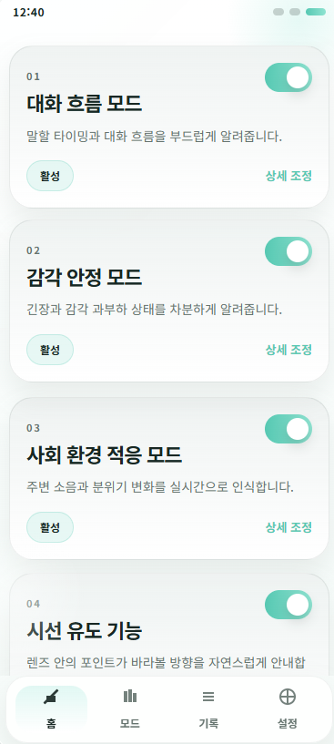
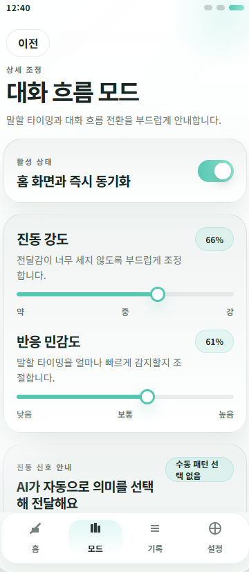
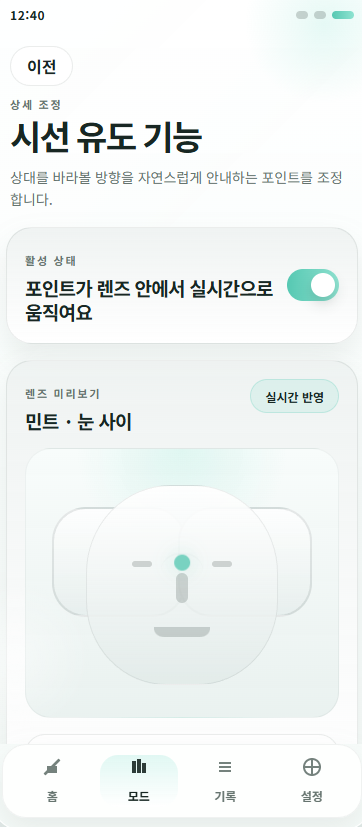
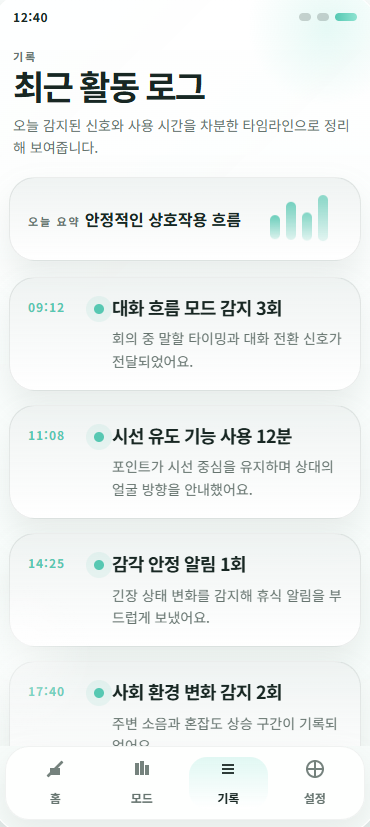

Situation 01
대화 중 언제 말해야 할지 모르겠을 때
Situation상대방의 말이 끝났는지, 내가 지금 반응해도 되는지 헷갈리는 순간
Function대화 흐름 모드가 말 끝과 반응 타이밍을 분석해 짧은 진동으로 알려줍니다.
대화의 타이밍을 놓치거나, 주변 자극이 많아지는 순간. SYNORA는 사용자가 상황을 더 편안하게 이해할 수 있도록 조용히 신호를 전달합니다.
AI가 상황을 분석하고, 사용자는 작은 신호로 자연스럽게 반응합니다.
사회적 상황이 어렵게 느껴지는 순간, SYNORA는 사용자가 상황을 더 편안하게 이해할 수 있도록 조용히 도와줍니다.
Situation상대방의 말이 끝났는지, 내가 지금 반응해도 되는지 헷갈리는 순간
Function대화 흐름 모드가 말 끝과 반응 타이밍을 분석해 짧은 진동으로 알려줍니다.
Situation대화는 이어지고 있지만 언제 질문하거나 대답해야 할지 어려운 순간
Function대화 흐름 모드가 질문하기 좋은 자연스러운 시점을 감지합니다.
Situation상대방의 눈을 직접 바라보는 것이 부담스럽거나 시선이 자꾸 벗어나는 순간
Function시선유도 기능이 상대방의 코 주변을 기준점으로 잡고 작은 빨간 점으로 시선 방향을 부드럽게 안내합니다.
Situation목소리가 떨리거나 호흡이 빨라지고, 스스로 긴장 상태를 알아차리기 어려운 순간
Function감각 안정 모드가 상태 변화를 인식하고 느린 진동으로 안정이 필요한 순간을 알려줍니다.
Situation카페, 지하철, 전시장처럼 소리와 움직임이 많아 주변 자극이 부담되는 순간
Function사회 환경 적응 모드가 소음과 혼잡도 변화를 감지해 환경이 복잡해졌음을 알려줍니다.
Situation회의나 모임에서 여러 말소리가 겹쳐 대화 흐름을 따라가기 어려운 순간
Function사회 환경 적응 모드가 대화 겹침과 정보량 증가를 분석해 현재 상황을 인지할 수 있도록 돕습니다.
SYNORA는 기술을 드러내기보다 착용자의 일상에 자연스럽게 섞이는 것을 목표로 합니다. 필요한 순간에만 작고 부드러운 신호로 사회적 상황을 이해할 수 있도록 돕습니다.

정면에서도 일반 안경처럼 보이는 형태로, 기능보다 자연스러운 인상을 먼저 전달합니다.

블랙 라운드 프레임과 미니멀한 센서 디테일로 일상적인 스타일에 자연스럽게 어울립니다.
SYNORA는 상대방, 사용자 자신, 주변 환경이라는 세 가지 정보를 바탕으로 사회적 상황을 더 쉽게 이해할 수 있도록 돕습니다.
상대방의 말이 끝나는 순간과 내가 반응해야 할 타이밍을 파악합니다.
긴장, 피로, 호흡 변화처럼 사용자의 상태 변화를 감지합니다.
소음, 혼잡도, 여러 말소리의 겹침처럼 환경의 복잡도를 분석합니다.
겉으로는 절제된 안경처럼 보이지만, 안쪽에는 상황을 읽고 작은 신호를 전달하기 위한 구조가 정교하게 배치됩니다.

안경 전면의 작은 센서는 상대방의 얼굴 방향과 대화 상황을 인식합니다. 눈에 띄지 않는 크기로 배치되어 일상적인 안경의 인상을 유지합니다.

안경 다리에는 AI 처리 구조와 촉각 피드백 모듈이 들어갑니다. 사용자는 화면을 보지 않아도 짧은 진동으로 상황을 알아차릴 수 있습니다.

기능 부품은 안경 다리 안쪽에 정리되어 외부에서는 복잡한 장치처럼 보이지 않습니다. SYNORA는 기술보다 착용 경험이 먼저 느껴지도록 설계됩니다.

귀 뒤에 닿는 부분은 안정적인 착용감을 위해 부드러운 형태로 마감되며, 안쪽에는 조용한 진동을 전달하는 햅틱 모듈이 함께 들어갑니다. 장시간 착용해도 부담이 적으면서 필요한 순간에는 분명한 촉각 신호를 전달하는 방향을 목표로 합니다.
SYNORA는 상황을 세 가지 기준으로 나누어 분석합니다. 상대방과의 대화 흐름, 나의 상태, 그리고 주변 환경입니다.
상대방의 말이 끝났는지, 내가 반응해야 할 순간인지 분석합니다.
Signal 짧고 빠른 진동으로 반응 타이밍을 알려줍니다.
사용자의 긴장도, 피로, 감각 과부하 가능성을 살핍니다.
Signal 느리고 부드러운 진동으로 안정이 필요한 순간을 알려줍니다.
주변 소음, 대화 겹침, 공간의 혼잡도를 분석합니다.
Signal 일정한 리듬의 진동으로 환경이 복잡해졌음을 알려줍니다.
SYNORA는 상대방의 얼굴 중심부, 특히 코 주변을 기준점으로 인식합니다. 사용자의 시선이 벗어나면 렌즈 안의 작은 빨간 점이 부드럽게 이동하며 편안한 시선 위치로 돌아올 수 있도록 돕습니다.
상대방의 코 주변을 자연스러운 시선 기준점으로 인식합니다.
시선이 벗어나면 작은 점이 천천히 기준점으로 이동합니다.
눈맞춤을 강제하지 않고, 사용자가 편안하게 바라볼 수 있도록 돕습니다.
SYNORA의 진동은 모드마다 다른 리듬으로 전달됩니다. 사용자는 화면을 확인하지 않아도 어떤 상황인지 감각적으로 알아차릴 수 있습니다.
SYNORA는 안경에서 끝나지 않습니다. 앱을 통해 기능을 켜고, 민감도를 조절하고, 사용 기록까지 한눈에 확인할 수 있습니다.
안경에서 전달된 신호는 앱에서 더 쉽게 이해하고 조절할 수 있습니다.

대화 흐름 모드, 감각 안정 모드, 사회 환경 적응 모드, 시선유도 기능을 한 화면에서 확인하고 바로 활성화할 수 있습니다.

진동 강도와 반응 민감도처럼 사용 경험에 영향을 주는 요소를 사용자의 감각에 맞게 조절할 수 있습니다.

렌즈 안 포인트의 작동 상태를 확인하고, 사용자가 더 편안하게 느끼는 방식으로 시선유도 기능을 조절할 수 있습니다.

하루 동안 어떤 신호가 얼마나 감지되었는지 기록으로 확인해 사용 패턴과 상태 변화를 돌아볼 수 있습니다.
조용한 분석과 부드러운 신호, 그리고 일상 속에 자연스럽게 스며드는 착용 경험을 위한 프로토타입입니다.